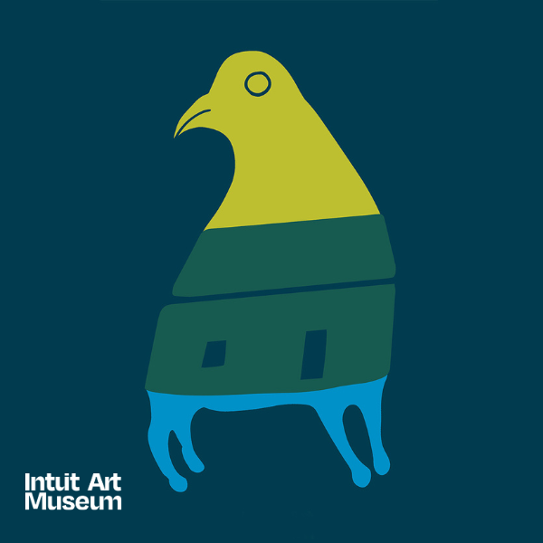

IAM exquisite
Hosted by the Young Professionals Board
Inspired by the exquisite corpse drawing activity, a playful game where each person adds to a shared creation without seeing the whole, IAM exquisite is a party full of surprises, curiosities and fun at Intuit. Dress inspired by exquisite corpse by playing with patterns, layers or styles you wouldn’t usually put together on your head, torso and legs.
IAM exquisite is a fundraiser for an important cause! Donations made toward IAM exquisite directly support the IAM Artist Catalyst Award, a new initiative of the Young Professionals Board to celebrate an artist whose work reflects creative resilience and daring vision. Help us raise $5,000 to support an artist with an unrestricted cash award and bring our community together to celebrate their work and our shared humanity. The exciting reveal of the selected artist recipient will be announced following the fundraiser.
Get ready for an unforgettable night at IAM exquisite, where a warm, welcoming atmosphere makes it easy to meet new people, vibe to incredible sounds from a Chicago-based DJ, sip craft cocktails, enjoy delicious bites, explore creative pop-up activations that spark curiosity, be among the first to experience Life is an Art: The Collection of Jan Petry, and support the IAM Artist Catalyst Award.
To attend or support, make a donation at a level that is accessible but meaningful to you:
Supporter Level $30
For students and artists
Advocate Level $50